Vendredi matin : une chute est-elle un événement indésirable ?
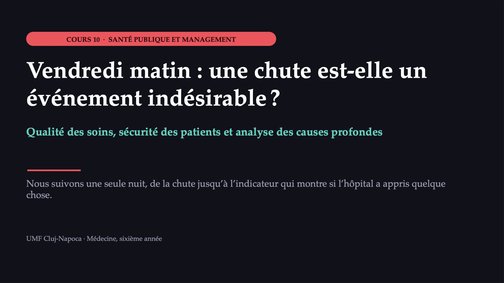
1 / 58M. R., la nuit de jeudi à vendredi
 2 / 58
2 / 58Vous êtes le médecin de garde : que faites-vous de la chute, en dehors du traitement ?
![MENTIMETER · VOTE 1 PREMIÈRE DÉCISION Vous êtes le médecin de garde : que faites-vous de la chute, en dehors du traitement ? A Je signale en interne, j’informe le médecin traitant et la famille, avec des faits, non des coupables B Je demande à l’infirmière de nuit une note explicative, pour établir qui a commis l’erreur C Je ne signale rien : à 81 ans les chutes sont attendues, et la fracture est une complication de l’âge D J’attends de voir si la famille porte plainte et je ne signale qu’à ce moment-là Vote individuel, sans discussion. Répondez sur votre téléphone, au code affiché.](diapozitive/C10/003.jpg) 3 / 58
3 / 58Convainquez votre voisin
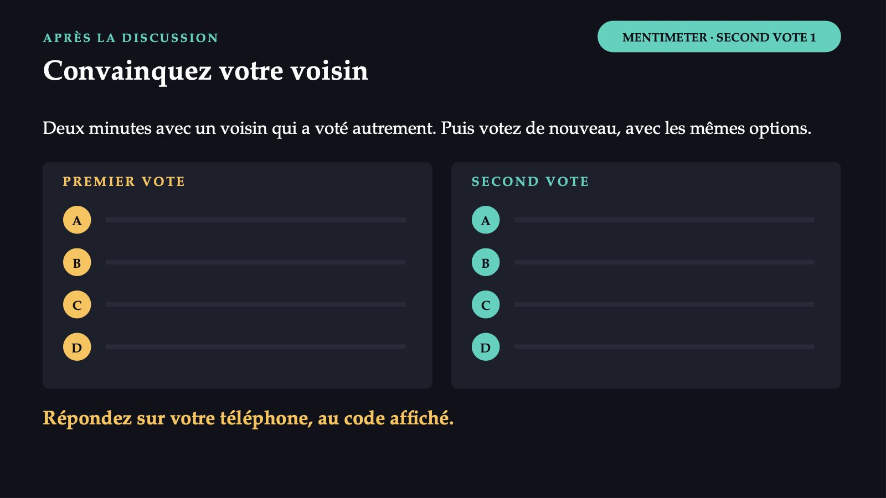
4 / 58La sécurité est une propriété du système
![LA SÉCURITÉ DES PATIENTS La sécurité est une propriété du système Activités organisées qui créent des cultures, des processus, des procédures, des technologies et des environnements réduisant les risques de façon constante, diminuant les préjudices évitables et rendant les erreurs moins probables. PREMIÈRE CONSÉQUENCE la sécurité relève du système, non de la vertu de chaque personne SECONDE CONSÉQUENCE la cible est le préjudice évitable : un patient peut mourir de sa maladie sans que les soins aient été en faute Source : OMS.](diapozitive/C10/005.jpg) 5 / 58
5 / 58Quatre mots, quatre conséquences
![UN VOCABULAIRE COMMUN Quatre mots, quatre conséquences L’INCIDENT écart par rapport aux soins habituels qui cause un préjudice au patient ou l’expose à un risque L’ÉVÉNEMENT INDÉSIRABLE un incident qui a causé un préjudice à un patient N’A PAS ATTEINT LE PATIENT incident arrêté avant le patient (« near miss ») : le pharmacien remarque une dose erronée avant qu’elle ne parte vers le service L’ÉVÉNEMENT SENTINELLE événement inattendu avec décès ou préjudice grave, physique ou psychologique, ou le risque d’un tel préjudice Source : glossaire de l’OMS.](diapozitive/C10/006.jpg) 6 / 58
6 / 58La fracture est un préjudice, donc un événement indésirable
![LA CHUTE DE M. R. La fracture est un préjudice, donc un événement indésirable LE PRÉJUDICE la fracture du col du fémur est un préjudice physique grave SENTINELLE ? selon la définition de l’OMS, la chute peut être traitée comme un événement sentinelle L’ÂGE ne la sort pas de la définition : celle-ci parle d’un préjudice associé aux soins, non de culpabilité Nous n’affirmons pas qu’une chute avec fracture figure sur la liste roumaine des événements sentinelles : cette liste ne fait pas partie des sources du cours.](diapozitive/C10/007.jpg) 7 / 58
7 / 58≈ 12 %
![LA FRÉQUENCE DES PRÉJUDICES Plus d’un patient sur dix ≈ 12 % des patients subissent un préjudice au cours des soins ; la moitié est considérée comme évitable PLUS DE 3 MILLIONS DE DÉCÈS PAR AN estimation mondiale de l’OMS, issue d’études cumulées : un ordre de grandeur, non la situation d’un hôpital LA CHARGE N’EST PAS ÉGALE revenu faible ou intermédiaire : 134 millions d’événements indésirables et 2,6 millions de décès par an ; revenu élevé : environ 15 % des dépenses vont aux conséquences Source : OMS, rapport mondial 2024.](diapozitive/C10/008.jpg) 8 / 58
8 / 58Chutes : premier événement indésirable à l’hôpital
 9 / 58
9 / 58Une valeur faible ne prouve pas la sécurité
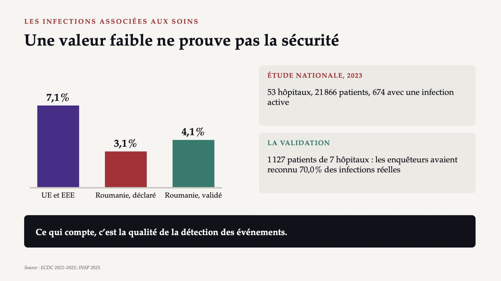
10 / 58Un hôpital n’apprend pas de ce qu’il ne connaît pas
 11 / 58
11 / 58La loi demande un signalement sans caractère accusatoire
![LE SIGNALEMENT EN ROUMANIE La loi demande un signalement sans caractère accusatoire LEGEA NR. 185/2017 l’ANMCS élabore une méthodologie de signalement « sans caractère accusatoire » (art. 5) STANDARDS D’ACCRÉDITATION registre des risques, système pour les événements sentinelles, protection de ceux qui signalent, soutien psychologique CE QUI NE RESSORT PAS le texte de la loi ne dit pas que le signalement serait protégé juridiquement Votre hôpital a, ou doit avoir, un circuit interne de signalement. Source : Legea nr. 185/2017 ; standards de l’ANMCS, IIIe édition.](diapozitive/C10/012.jpg) 12 / 58
12 / 58A : signalez les faits, ne cherchez pas de coupables
![PREMIÈRE DÉCISION · LA RÉPONSE A : signalez les faits, ne cherchez pas de coupables A Événement indésirable grave, traitable comme sentinelle ; la loi demande un signalement sans caractère accusatoire ; la famille est informée. B La note explicative déplace la question de « que s’est-il passé ? » vers « qui a commis l’erreur ? ». C L’âge augmente le risque, mais les chutes sont fréquentes, avec des préjudices évitables. D Avec les seules plaintes, l’hôpital n’apprend pas de ce qui ne dérange personne. Information de la famille : recommandée par le plan d’action mondial 2021–2030 de l’OMS.](diapozitive/C10/013.jpg) 13 / 58
13 / 58Lundi, la plainte de la famille
![ACTE II · LA COMPLICATION Lundi, la plainte de la famille LUNDI la famille de M. R. dépose une plainte écrite auprès de la direction de l’hôpital LA DEMANDE le directeur médical veut « une solution rapide » avant la réunion du comité de direction de jeudi LE RISQUE la solution rapide typique : sanctionner une personne ou une circulaire demandant « plus d’attention » La deuxième semaine, le responsable du management de la qualité convoque une analyse de l’événement. Cas construit pour le cours ; les détails sont plausibles, non réels.](diapozitive/C10/014.jpg) 14 / 58
14 / 58Le fromage suisse : des défenses trouées
![LE MODÈLE DE REASON Le fromage suisse : des défenses trouées procédure équipement vérification personne L’ERREUR ACTIVE commise au contact direct du patient LA CONDITION LATENTE défaillance invisible du système, créée par des décisions de conception, d’organisation ou de budget ; exemple : le nombre d’infirmières d’un service La question n’est pas qui a commis l’erreur, mais comment et pourquoi les défenses ont cédé. Source : Reason, 1990, d’après le guide de l’OMS et l’ouvrage européen de référence.](diapozitive/C10/015.jpg) 15 / 58
15 / 58Qui apprend d’une erreur ?
16 / 58La culture juste ne veut pas dire « personne n’en répond »
![CULTURE JUSTE · LE SCHÉMA DE TRAVAIL La culture juste ne veut pas dire « personne n’en répond » L’ERREUR HUMAINE inattention involontaire : on reconçoit le système, on soutient la personne LE COMPORTEMENT À RISQUE raccourci au risque non reconnu : accompagnement, suppression des raisons de la tentation LE COMPORTEMENT IMPRUDENT méconnaissance consciente d’un risque substantiel : le seul qui justifie une sanction Le critère : la nature du comportement, non la gravité du résultat. La personne impliquée souffre aussi. Schéma de travail du cours. OMS : des limites claires entre erreur et négligence.](diapozitive/C10/017.jpg) 17 / 58
17 / 58Cinq étapes, de l’équipe à la mesure
![L’ANALYSE DES CAUSES PROFONDES Cinq étapes, de l’équipe à la mesure Nous reconstituons les faits et demandons « pourquoi ? » jusqu’à ce que les causes de fond soient élucidées. 1 L’équipe : connaît le processus, n’a pas été directement impliquée ; les personnes impliquées sont interrogées, non jugées. 2 La chronologie : faits et conditions, heure par heure, sans qualificatifs. 3 Les facteurs contributifs, cherchés par domaines. 4 Les causes profondes : celles qui, corrigées, préviennent le plus probablement la répétition. 5 Les mesures : pour chacune, un responsable, un délai et un indicateur. Limites : la pression du temps, le manque de formation, d’expertise, d’indépendance (OMS, 2020).](diapozitive/C10/018.jpg) 18 / 58
18 / 58La même nuit, lue par domaines
![LES FACTEURS CONTRIBUTIFS La même nuit, lue par domaines L’ÉQUIPE une infirmière pour 28 patients, avec de nouvelles admissions après minuit L’ÉQUIPEMENT la veilleuse et le lit n’étaient pas adaptés L’ORGANISATION l’évaluation du risque et la prescription « si besoin » n’étaient pas encadrées LA CULTURE les chutes antérieures n’avaient pas été signalées Domaines de l’OMS : l’opérateur individuel, l’équipe, l’équipement, l’organisation, l’autorité de réglementation, les facteurs sociaux et culturels. L’analyse ne s’arrête pas au premier.](diapozitive/C10/019.jpg) 19 / 58
19 / 58La salle devient la revue de morbidité et de mortalité
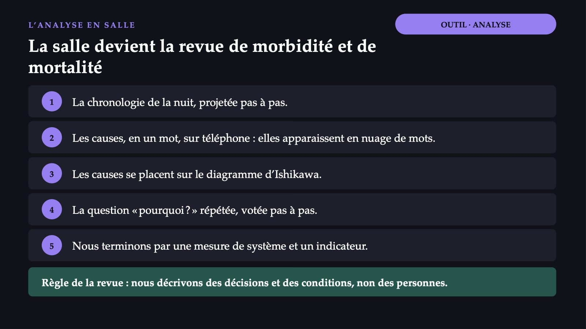
20 / 58Ce qui s’est passé, sans coupable désigné
 21 / 58
21 / 58Ce qu’il y avait autour du lit
 22 / 58
22 / 583 h 10 et les six derniers mois
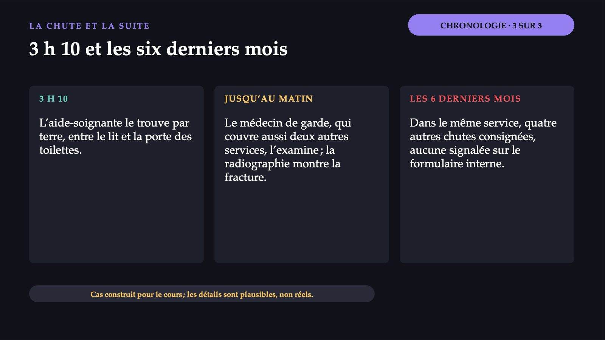
23 / 58Quelle est la cause la plus importante de la chute ?
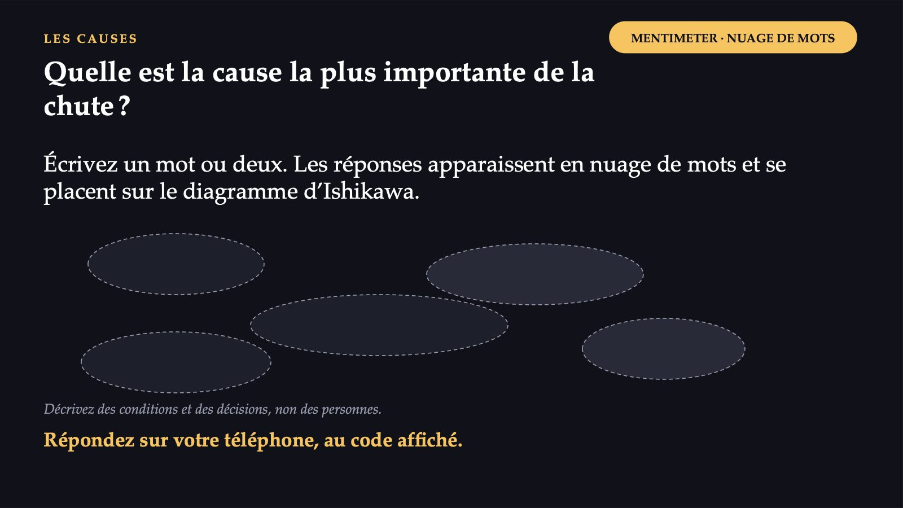
24 / 58Chute avec fracture du col du fémur : les causes possibles
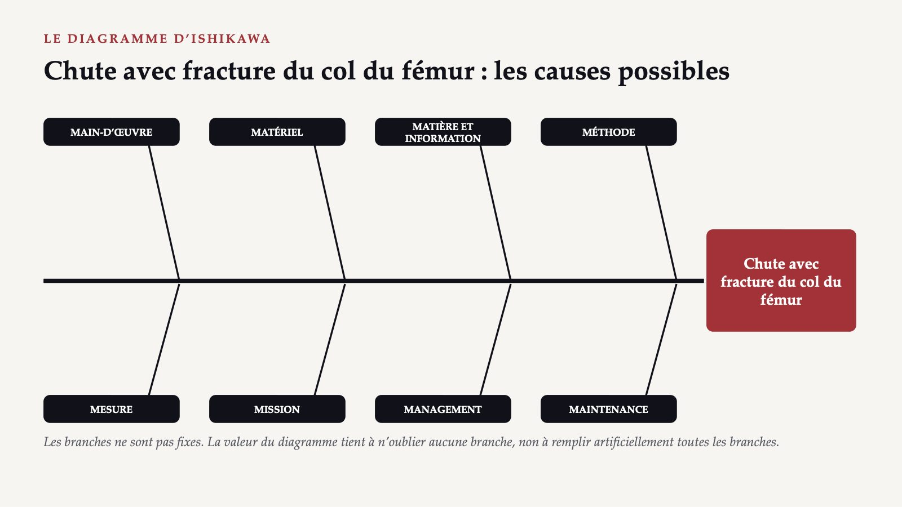
25 / 58Ce que l’analyse place sur les branches
![LE DIAGRAMME D’ISHIKAWA · COMPLÉTÉ Ce que l’analyse place sur les branches Chute avec fracture du col du fémur MAIN-D’ŒUVRE une infirmière pour 28 patients ; nouvelles admissions pendant la nuit MATÉRIEL veilleuse non réparée, lit qui ne s’abaisse pas, sonnette difficile d’accès MATIÈRE ET INFORMATION MÉTHODE risque évalué une seule fois ; somnifère prescrit automatiquement MESURE aucun indicateur des chutes dans le service MISSION MANAGEMENT demandes de réparation sans réponse ; chutes antérieures non signalées MAINTENANCE Toutes les branches n’ont pas de causes dans tous les cas.](diapozitive/C10/026.jpg) 26 / 58
26 / 58Où s’arrête la chaîne des « pourquoi ? »
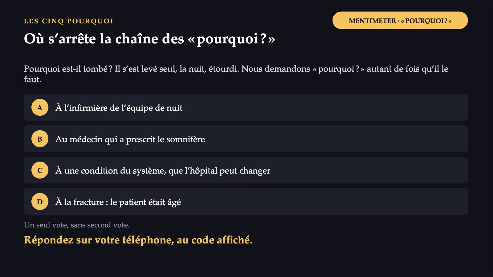
27 / 58La chaîne s’arrête à une procédure qui manquait
![LES CINQ POURQUOI · LA RÉPONSE La chaîne s’arrête à une procédure qui manquait 1 Pourquoi est-il tombé ? Il s’est levé seul, la nuit, étourdi. 2 Pourquoi était-il étourdi ? Somnifère chez un âgé sous diurétique. 3 Pourquoi l’a-t-il reçu ? Prescrit « si besoin » à tous les âgés, sans réévaluation. 4 Pourquoi pas de réévaluation ? Le risque n’était évalué qu’à l’admission. 5 Pourquoi ? Le service n’avait ni procédure de prévention des chutes ni indicateur. C’est là qu’on peut agir : sur la procédure et sur l’information qui ne circulait pas.](diapozitive/C10/028.jpg) 28 / 58
28 / 58Quelle mesure principale le comité de direction choisit-il ?
![MENTIMETER · VOTE 2 DEUXIÈME DÉCISION Quelle mesure principale le comité de direction choisit-il ? A Former tout le personnel et une circulaire demandant une « attention accrue » envers les âgés B Sanction disciplinaire de l’infirmière de l’équipe de nuit, comme signal pour le reste du personnel C Procédure du service : réévaluer le risque à chaque sédatif et changement d’état, somnifère retiré de la prescription automatique, lits qui s’abaissent, signalement mensuel D Interdire les somnifères dans tout le service, sans autre changement Vote individuel, sans discussion. Répondez sur votre téléphone, au code affiché.](diapozitive/C10/029.jpg) 29 / 58
29 / 58Discutez, puis votez de nouveau
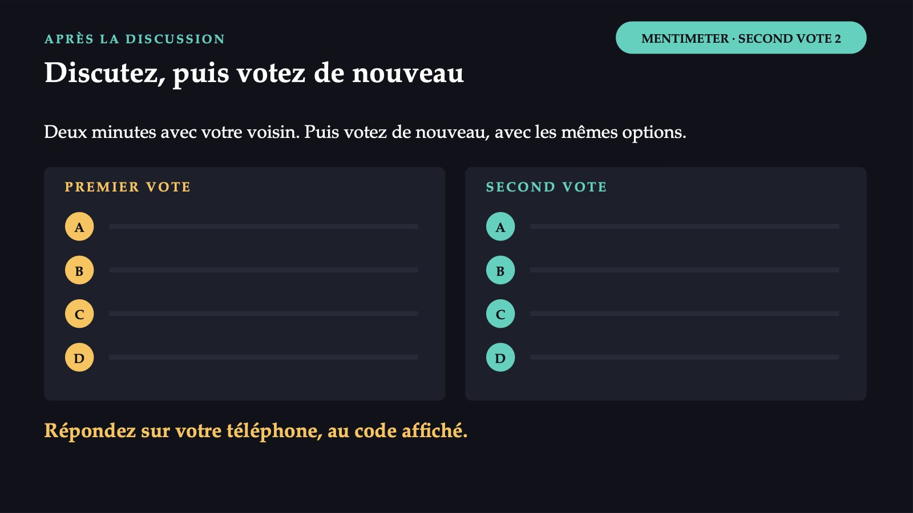
30 / 58Toutes les mesures ne pèsent pas autant
![LA FORCE DES MESURES Toutes les mesures ne pèsent pas autant PLUS FAIBLES reposent sur la vigilance des personnes : « plus d’attention », formation, circulaire PLUS FORTES changent le processus : réévaluation obligatoire du risque à chaque sédatif, liste de vérification à la relève LES PLUS FORTES changent l’environnement ou éliminent le danger : lit abaissé, alarme de sortie de lit, somnifère retiré de la prescription automatique La formation reste nécessaire, mais seule elle n’est pas une mesure de système.](diapozitive/C10/031.jpg) 31 / 58
31 / 58Une mesure dit quoi, qui, d’ici quand et comment on saura
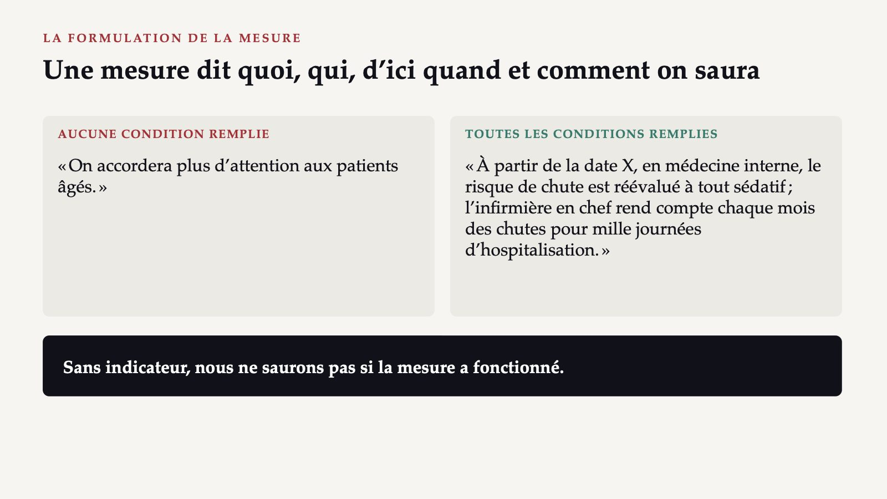
32 / 58C : une mesure sur plusieurs domaines
![DEUXIÈME DÉCISION · LA RÉPONSE C : une mesure sur plusieurs domaines A Pas fausse, mais faible : elle laisse les conditions latentes et mise sur la vigilance. B Elle traite une condition latente comme une erreur active et fait baisser le signalement futur. C Elle répond aux causes profondes : change le processus, l’environnement et l’information, sur plusieurs domaines. D Elle élimine un danger, mais en crée d’autres et laisse la veilleuse, l’évaluation du risque et la charge de l’équipe. Une mesure de système se juge aussi à ses effets indésirables.](diapozitive/C10/033.jpg) 33 / 58
33 / 58Six mois plus tard
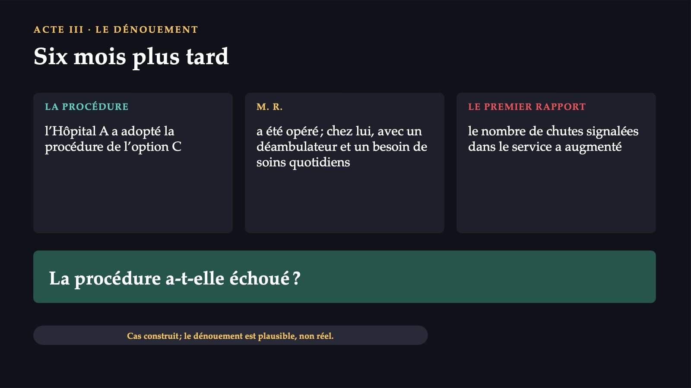
34 / 58La qualité se juge sur le bilan
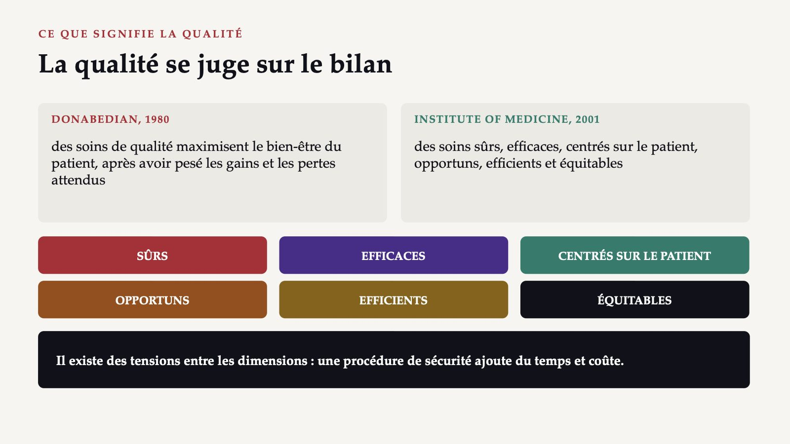
35 / 58Quelle dimension est la plus négligée ?
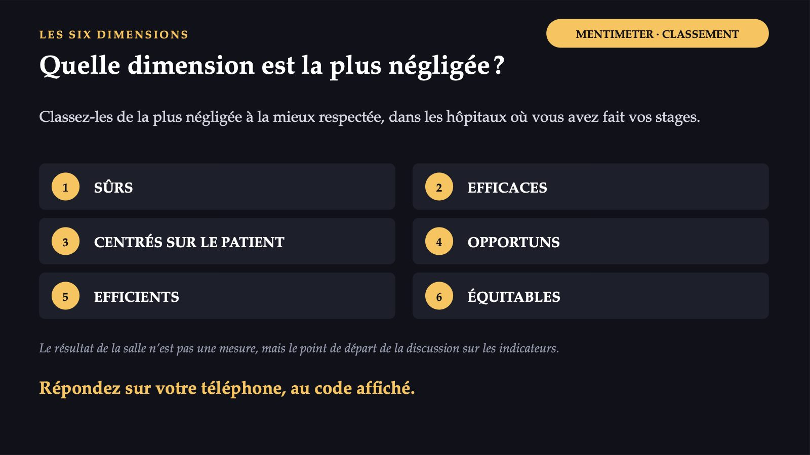
36 / 58Trois façons de mesurer la qualité
![STRUCTURE, PROCESSUS, RÉSULTAT Trois façons de mesurer la qualité LA STRUCTURE le cadre des soins : bâtiments, équipements, médicaments, connaissances, systèmes informatiques, professionnels LE PROCESSUS ce qui est effectivement fait : prescriptions, interventions, orientations ; l’approvisionnement, les listes d’attente LE RÉSULTAT les effets sur la santé : mortalité, morbidité, incapacité, qualité de vie ; pression artérielle, capacité fonctionnelle Une bonne structure augmente la probabilité d’un bon processus, et celui-ci d’un bon résultat : une hypothèse à vérifier, non une garantie. Source : Donabedian, 1966.](diapozitive/C10/037.jpg) 37 / 58
37 / 58Chaque indicateur a ses forces et ses faiblesses
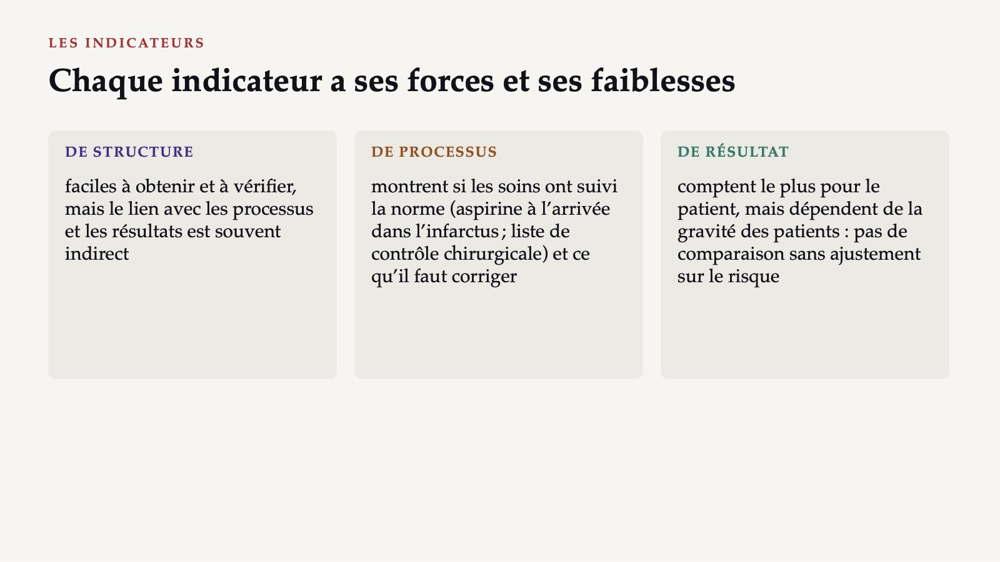
38 / 58Deux philosophies de la qualité
![ASSURANCE ET AMÉLIORATION Deux philosophies de la qualité ASSURANCE QUALITÉ AMÉLIORATION DE LA QUALITÉ Vise à éviter les problèmes, par la vérification et la mesure l’apprentissage qui mène à l’amélioration continue Sert la responsabilité envers l’extérieur le changement S’appuie sur l’autorité externe, managériale l’autorité professionnelle interne Compare les unités pour porter des jugements sur la qualité apprendre des différences L’accréditation relève de l’assurance ; l’analyse d’un événement indésirable, de l’amélioration. Source : ouvrage européen de référence, tableau 3.1.](diapozitive/C10/039.jpg) 39 / 58
39 / 58Planifier, faire, vérifier, agir
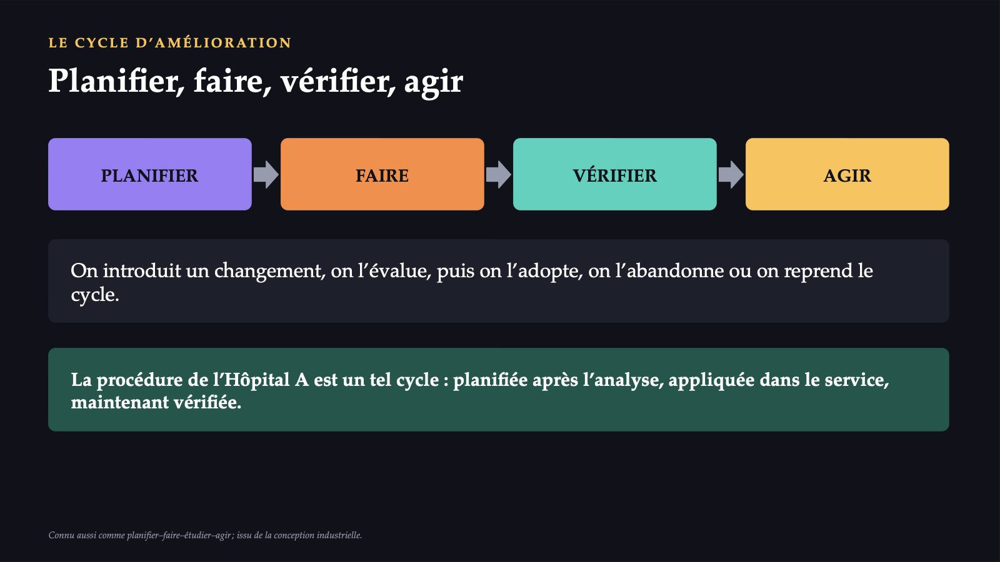
40 / 58Deux indicateurs, de types différents
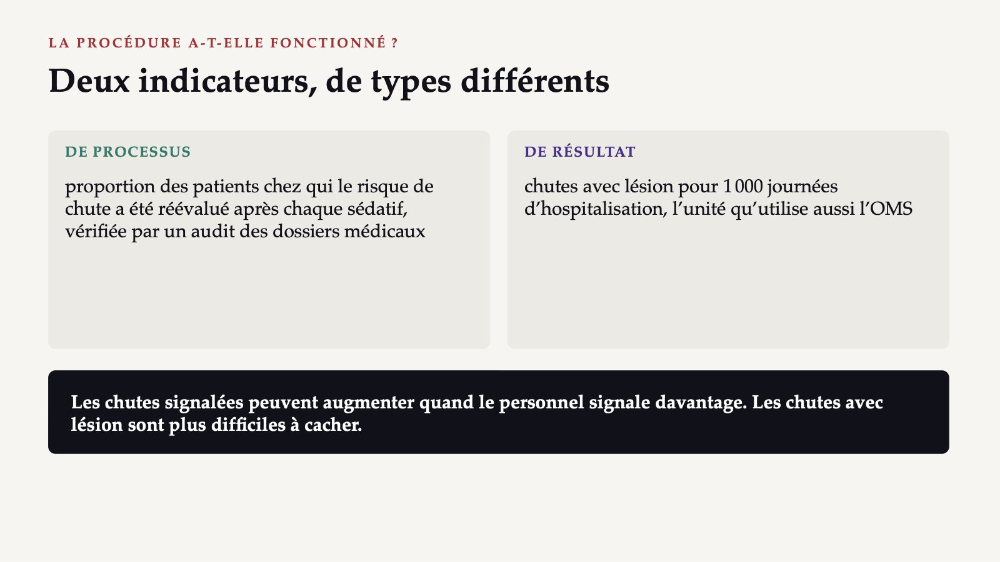
41 / 58Plus de chutes signalées, moins avec lésion
![LES CHUTES DU SERVICE · VALEURS HYPOTHÉTIQUES Plus de chutes signalées, moins avec lésion SIGNALÉES POUR 1 000 JOURNÉES 1,1 avant 2,4 après AVEC LÉSION POUR 1 000 JOURNÉES 0,67 avant 0,43 après Journées d’hospitalisation : 4 500 avant, 4 600 après. Chutes signalées : 5, puis 11. Avec lésion : 3, puis 2. La réévaluation après un sédatif figure dans 85 % des dossiers audités. Le signalement et le processus se sont améliorés, le résultat aussi. Avec de petits nombres, 3 contre 2 peut être dû au hasard.](diapozitive/C10/042.jpg) 42 / 58
42 / 58Ce que montrent les votes et les causes nommées
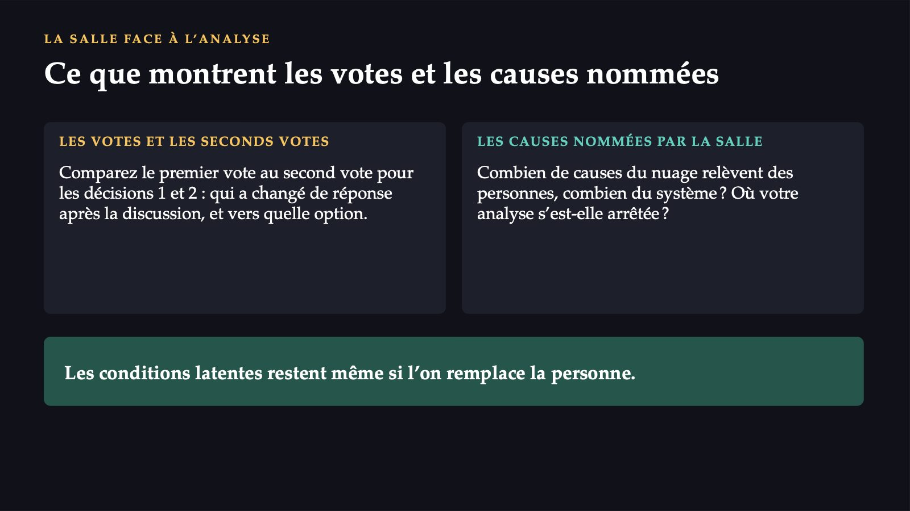
43 / 586,5 jours
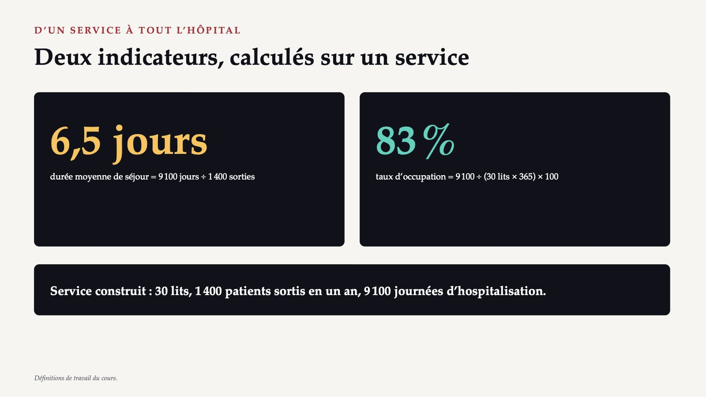
44 / 58Un indicateur seul ne dit rien
![COMMENT LES LIRE Un indicateur seul ne dit rien LA DURÉE MOYENNE élevée : patients lourds, complications, retards ; faible : efficience ou sortie prématurée ; se compare ajustée LE TAUX D’OCCUPATION très faible : lits en excès ; très élevé : aucune réserve pour les urgences ; le lien avec les infections n’a pas résisté à l’analyse multivariée (ECDC) LES RÉHOSPITALISATIONS non programmées à 30 jours : durée faible et réhospitalisations nombreuses suggèrent des sorties prématurées LA MORTALITÉ décès observés rapportés aux décès attendus selon la gravité ; sous un : moins de décès qu’attendu](diapozitive/C10/045.jpg) 45 / 58
45 / 58Alpha et Bêta, les mêmes indicateurs
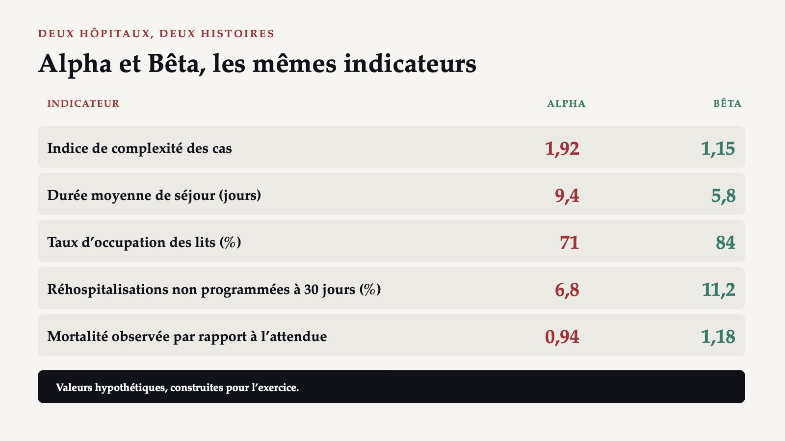
46 / 58Quel hôpital a la meilleure performance ?
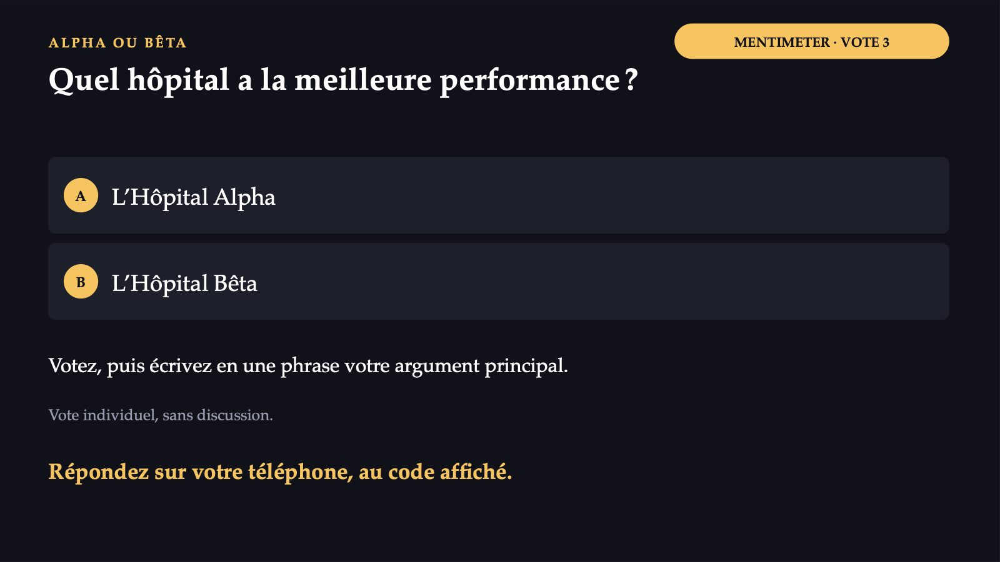
47 / 58Alpha ou Bêta : votez encore une fois
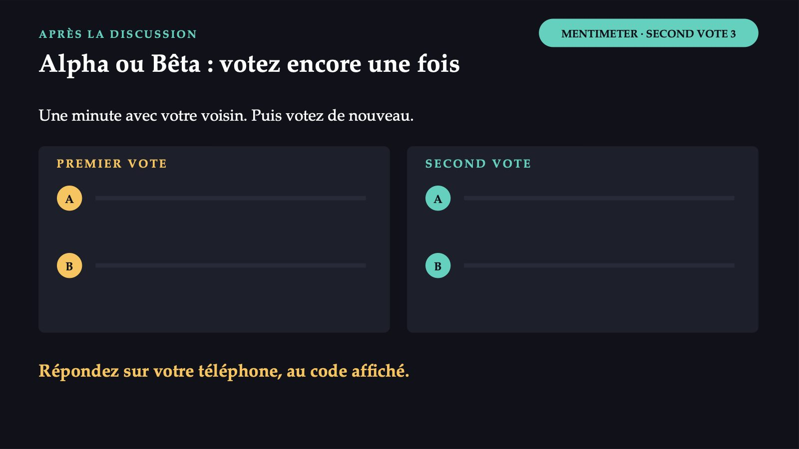
48 / 58Non pas un bon hôpital et un mauvais : deux profils
![ALPHA ET BÊTA · LA RÉPONSE Non pas un bon hôpital et un mauvais : deux profils 1 La durée de séjour ne se lit qu’ajustée sur la complexité : Alpha traite des patients beaucoup plus complexes. 2 Les réhospitalisations et la mortalité ajustée contrebalancent les indicateurs d’efficience. 3 Un classement selon un seul indicateur peut pousser les hôpitaux à éviter les patients lourds. 4 Un hôpital a des profils différents sur des dimensions différentes. Bêta : beaucoup de réhospitalisations et mortalité supérieure à l’attendue, signe de sorties précipitées.](diapozitive/C10/049.jpg) 49 / 58
49 / 58Avec qui nous comparer
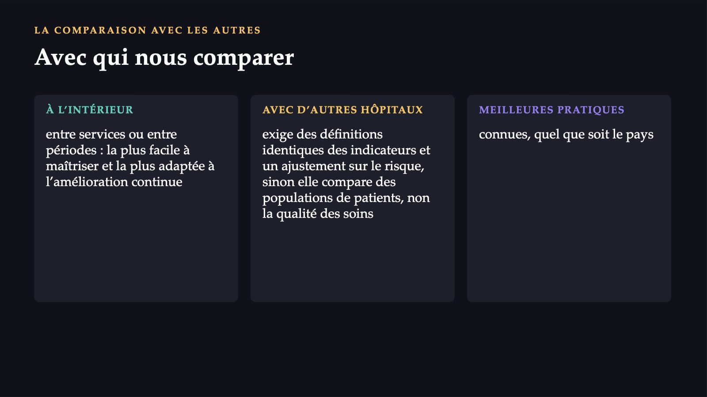
50 / 58La valeur : les résultats qui comptent, rapportés au coût
![LES SOINS FONDÉS SUR LA VALEUR La valeur : les résultats qui comptent, rapportés au coût RÉSULTATS SUR TROIS NIVEAUX l’état de santé atteint ; le processus de rétablissement ; la durabilité du résultat L’ORGANISATION équipe dédiée à une affection, payée par une somme unique pour tout le cycle POUR M. R. après six mois, marche-t-il de nouveau seul ? Combien le chemin a-t-il coûté, pour lui et pour le système ? Dans un système payé au cas, la réhospitalisation après une sortie précipitée devient une perte, non un revenu. Méthode de travail, d’après Porter (2010).](diapozitive/C10/051.jpg) 51 / 58
51 / 58Héparine : que faites-vous ?
![MENTIMETER · VOTE 4 TROISIÈME DÉCISION · LE TRANSFERT Héparine : que faites-vous ? En chirurgie, le pharmacien remarque, avant que le médicament ne parte vers le service, qu’on a délivré une héparine dix fois plus concentrée que prescrit : les deux concentrations sont dans le même tiroir, aux étiquettes presque identiques. Le patient n’a rien reçu. A Rien : le patient n’a pas subi de préjudice, ce n’est donc pas un événement indésirable B Je signale un incident qui n’a pas atteint le patient et je demande une brève analyse du rangement C Je consigne l’événement seulement dans le dossier médical du patient D Je demande la sanction de la personne qui a préparé le médicament Un seul vote, sans second vote.](diapozitive/C10/052.jpg) 52 / 58
52 / 58B : signalez et corrigez la cause
![TROISIÈME DÉCISION · LA RÉPONSE B : signalez et corrigez la cause A Perd exactement l’information que les systèmes de signalement sont construits pour recueillir. B Même cause profonde que pour un événement grave : deux concentrations rangées ensemble. Mesure forte : séparation physique ou retrait de la forte concentration. C Laisse l’information dans un document que personne ne lit en dehors des soins du patient. D Punit une erreur que le système a rendue probable et décourage le signalement. Les standards d’accréditation demandent de signaler et d’analyser les incidents qui n’ont pas atteint le patient.](diapozitive/C10/053.jpg) 53 / 58
53 / 58Dix questions, dans l’ordre du cours
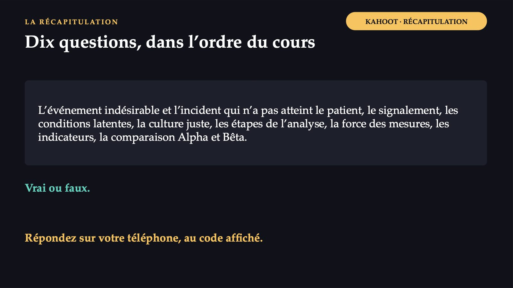
54 / 58Les réponses du jeu
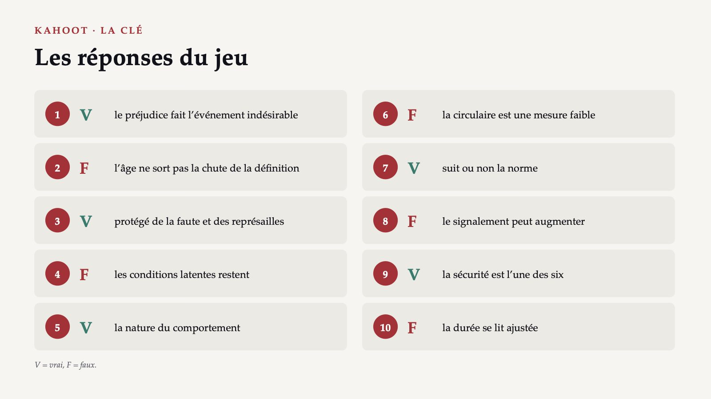
55 / 58M. R., de la chute à l’indicateur
 56 / 58
56 / 58Ce que vous faites autrement dans le service
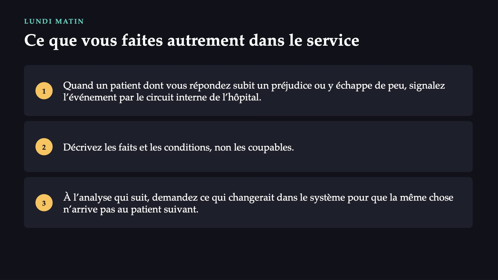
57 / 58Avant de partir
 58 / 58
58 / 58Flèches ou espace : navigation · O : vue d’ensemble · N : notes de l’intervenant · F : plein écran · Échap : fermer